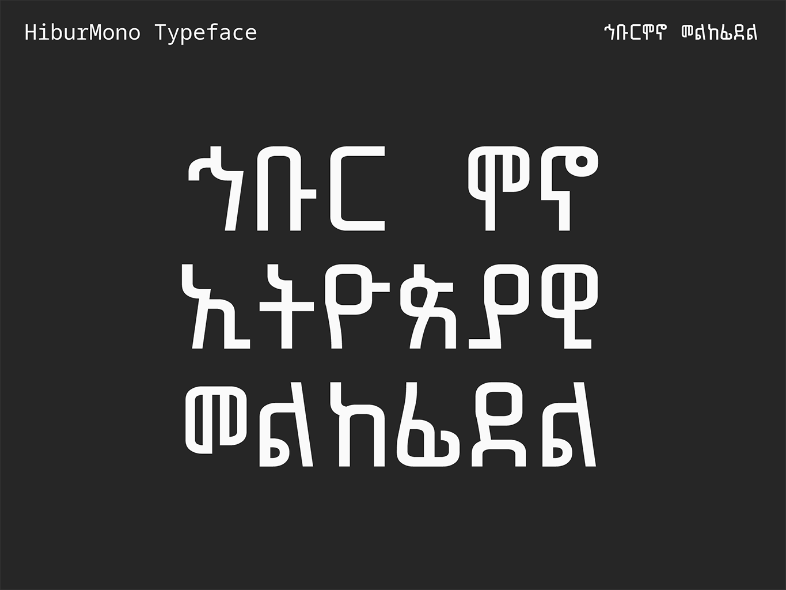
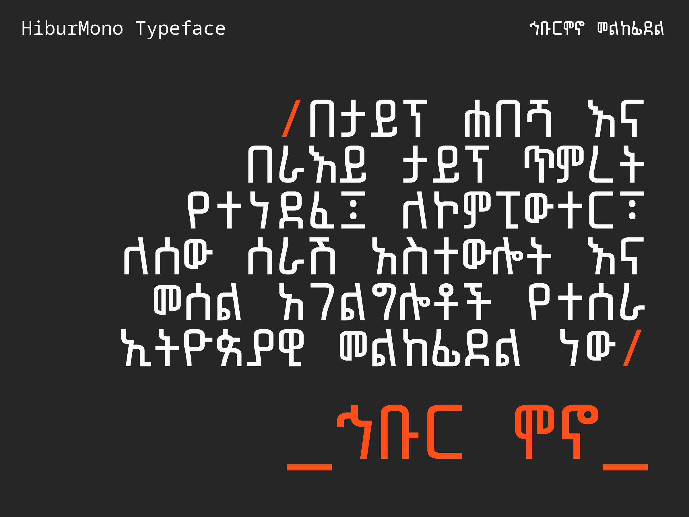
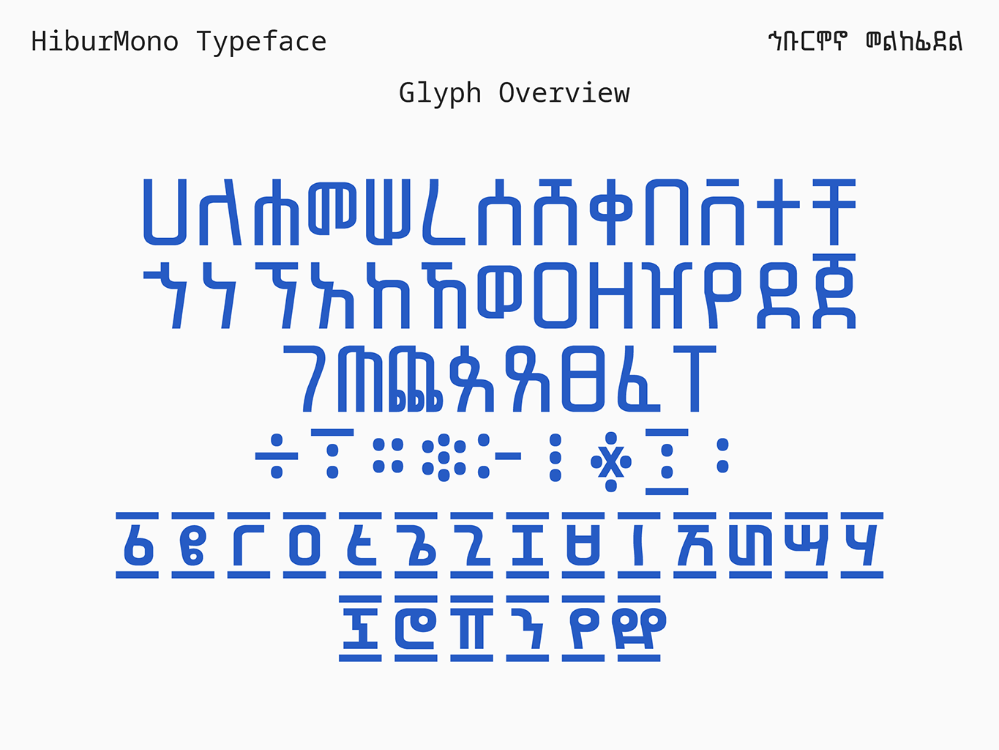
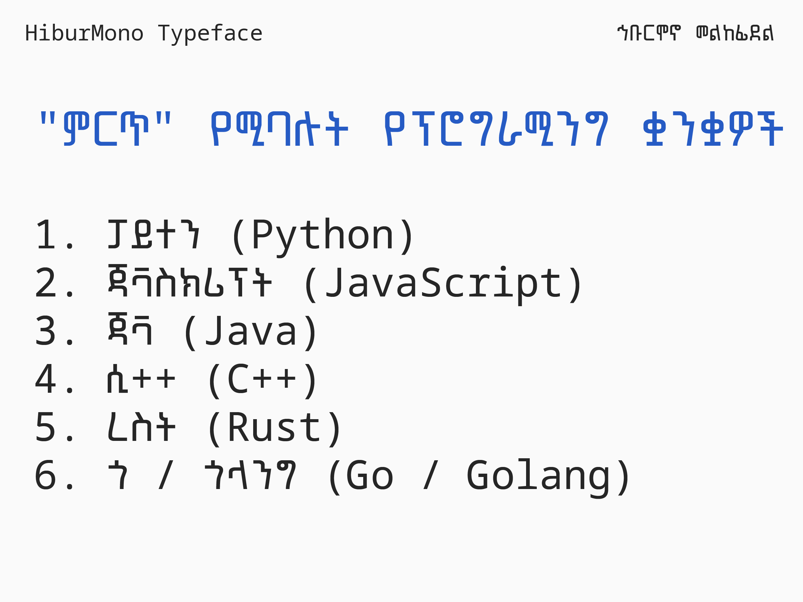
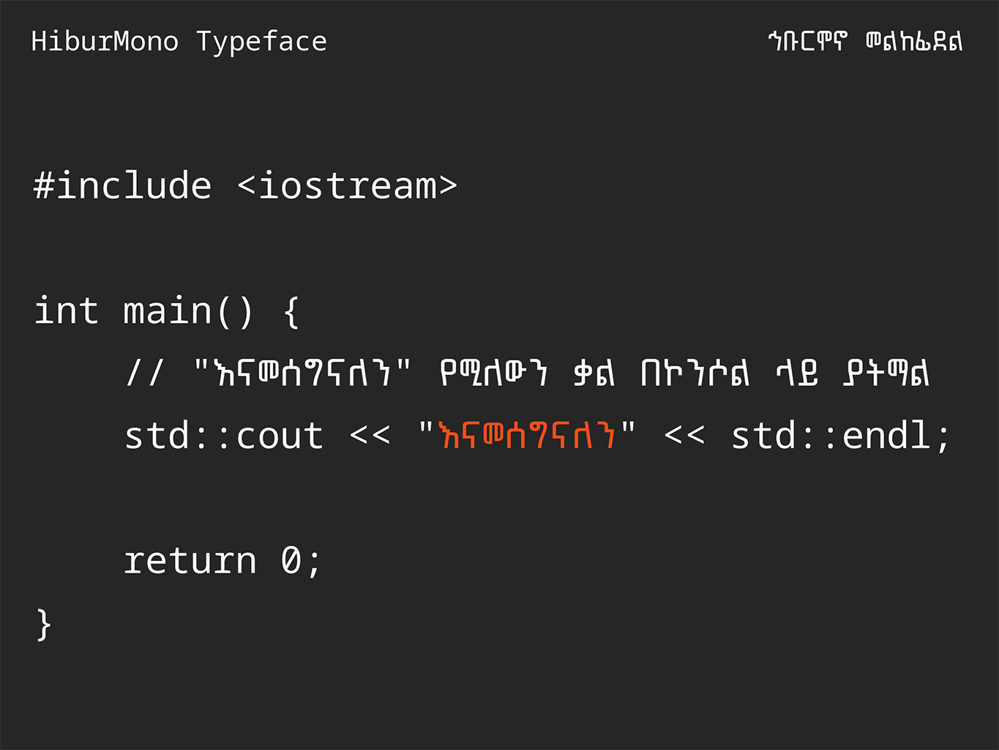
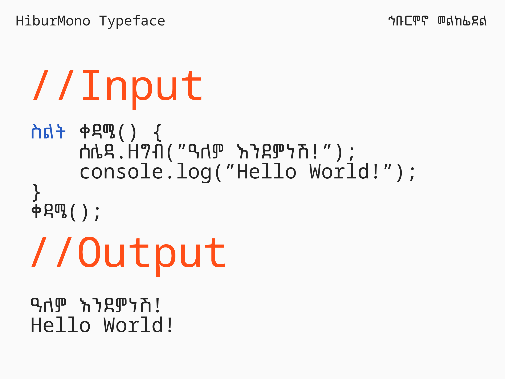
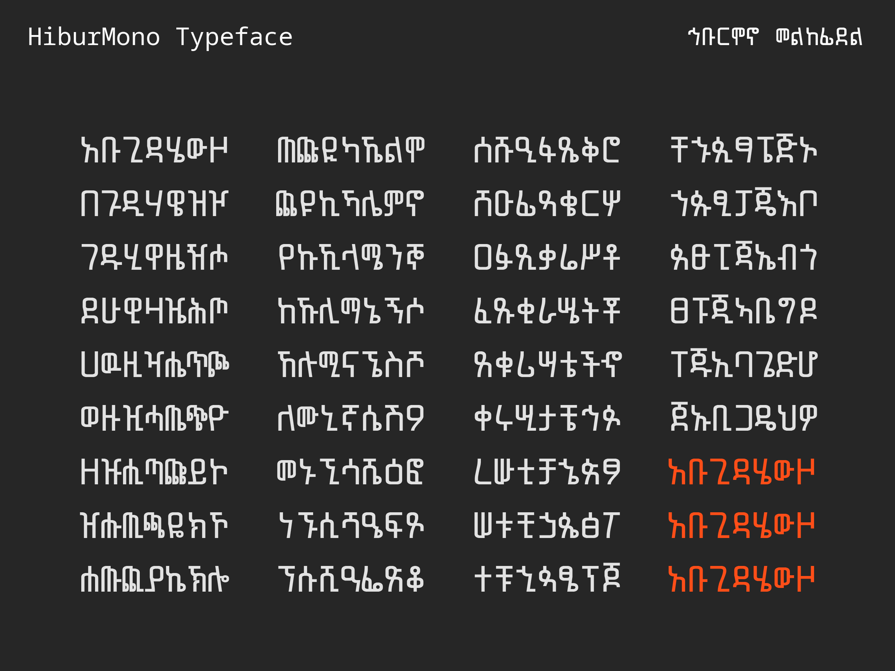
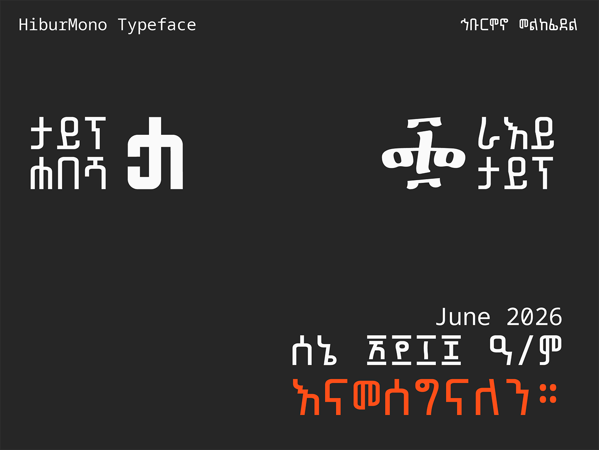

Hibur Mono is a single weight, monospaced, Ethiopic typeface designed for columnar display environments such as computer terminals and software code development interfaces.
The Hibur Mono Ethiopic glyphs have been designed from the ground up and optimized for the fixed width constraints of a monospaced typeface. Hibur Mono is compatible with the Noto Sans Mono geometric dimensions. The non-Ethiopic glyphs in Hibur Mono have also been leveraged from Noto Sans Mono.
To contribute, see github.com/typehabesha/HiburMono.
የኅቡር ሞኖ መልከፊደል ቅርጾች (glyphs) ለቋሚ ስፋት የፊደል ቅርጽ ገደቦች እጅግ ተስማሚ በሆነ መልኩ የተመቻቹ (optimized) ናቸው። ኅቡር ሞኖ ከኖቶ ሳንስ ሞኖ (Noto Sans Mono) የጂኦሜትሪክ ልኬቶች (geometric dimensions) ጋር የተጣጣመ ሲሆን በተጨማሪም በኅቡር ሞኖ ውስጥ የተካተቱት ኢትዮጵያዊ ያልሆኑት የፊደላት ቅርጾች ከኖቶ ሳንስ ሞኖ (Noto Sans Mono) መልከፊደል የተወሰዱ ናቸው።
ኅቡር ሞኖ በታይፕ ሐበሻ እና በራእይ ታይፕ ጥምረት እንደ ኮምፒውተር ተርሚናሎች እና የሶፍትዌር ኮድ ማበልጸጊያ በይነገጾች (interfaces) ላሉ አገልግሎቶች ተብሎ የተነደፈ፣ ነጠላ ውፍረት ያለው እና ቋሚ ስፋት ያለው (monospaced) ኢትዮጵያዊ መልከፊደል ነው።
ለዚህ ፕሮጀክት አስተዋጽኦ ለማድረግ github.com/typehabesha/HiburMono







